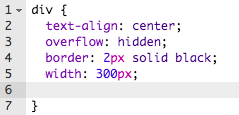
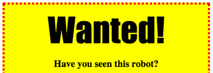

Передмова
У цьому проекті ви зможете створити свій плакат або оголошення.
Крок1: Стилізація вашого плакату
Почнімо з редагування CSS коду для плакату.
Завдання для виконання
-
Відкрий цю чернетку: jumpto.cc/web-wanted.

screenshot -
Натисни на вкладку "style.css". Ти помітиш, що там уже є CSS властивості для
div, який стилізує різні частинки плакату.div { text-align: center; overflow: hidden; border: 2px solid black; width: 300px; } -
Почнімо з властивості
text-align:text-align: center;Що станеться, коли ти зміниш слово
centerнаleftчиright? -
Як щодо властивості
border(рамка)?border: 2px solid black;Код
2pxозначає 2 пікселі. Що станеться коли ти зміниш2px solid blackна4px dotted red? -
Змініть
width(ширина) на400px. Що станеться з плакатом? -
Додаймо трішки CSS щоб змінити колір фону плаката. На 5-ому рядку коду створи новий пустий рядок:
 screenshot Та напиши там:
background: yellow;Тепер фон
<div>жовтий.
screenshot
Завдання: Удосконалення плакату
Додай наступні CSS властивості до стилів твого div:
border-radius: 40px;Що робить ця властивість? Що станеться, якщо ти зміниш число "40"?
Крок 2: Стилізація зображень
Завдання для виконання
-
Поки що для тегу
<img>немає жодних CSS властивостей, отож додаймо кілька!Спершу додай наступний код в кінець CSS файлу:
img { }
screenshot -
Тепер ми можемо додавати CSS властивості для зображенння між фігурними дужками
{та}.Наприклад, додай цей код у фігурні дужки, щоб встановити ширину зображення:
width: 100px;Ти побачиш, що розмір зображення змінився, тож тепер його ширина 100 пікселів.

screenshot -
Ти також можеш додати рамку навколо зображення за допомогою цього коду:
border: 1px solid black; -
Ви помітили, що між зображенням і межею не дуже багато вільного простору?

screenshot Це можна виправити, додавши відступ навколо зображення:
padding: 10px;Відступ - це простір між вмістом (у цьому випадку зображенням) і його межею.

screenshot Що, на твою думку, станеться, якщо змінити відступ на 50px?
Виклик: Вдосконалення зображення
Можеш задати своєму зображенню колір заднього фону? Чи округлі краї?
Більше назв CSS кольорів можна знайти за посиланням https://www.w3schools.com/colors/colors_names.asp
Збережіть свій проект
Крок 3: Стилізація заголовків
Давай покращимо стиль заголовка <h1>.
Завдання для виконання
-
Додай наступний код під CSS код твого зображення:
h1 { }Сюди ти додаватимеш CSS властивості для твого основного заголовка
<h1>. -
Щоб змінити шрифт твоїх заголовків
<h1>, додай наступний код у фігурні дужки:font-family: Impact; -
Ти також можеш змінити розмір заголовка:
font-size: 50pt; -
Чи помітили ви великий простір між заголовком
<h1>та всім, що знаходиться навколо нього?
screenshot Це через поля навколо заголовку. Поле - це простір між елементом (в цьому випадку заголовком) та всім, що знаходиться навколо нього.
За допомогою цього коду, ти можеш зробити поля меншими:
margin: 10px; screenshot -
Також ти можеш підкреслити свій заголовок:
text-decoration: underline;
Виклик: Зроби свій плакат дивовижним!
Додай більше CSS коду, щоб стилізувати свої параграфи (p) та заголовки (h1, h3).
.png)
Ось список різних CSS властивостей, які ти можеш використати:
color: black;
background: white;
font-family: Arial / Comic Sans MS / Courier / Impact / Tahoma;
font-size: 12pt;
font-weight: bold;
text-decoration: underline overline line-through;
margin: 10px;
padding: 10px;
width: 100px;
height: 100px;
Збережіть свій проект
Виклик: Зроби рекламу події!
Чи можеш ти зробити плакат заходу, що відбувається у твоїй школі? Це могла б бути гра, спортивна подія, або навіть плакат, що рекламує твій CodeClub!